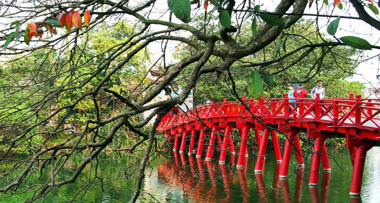
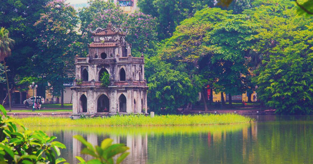
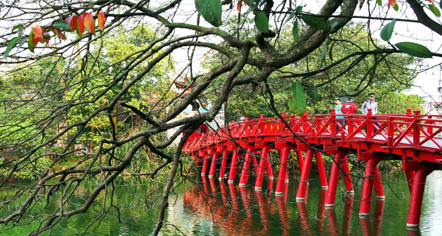
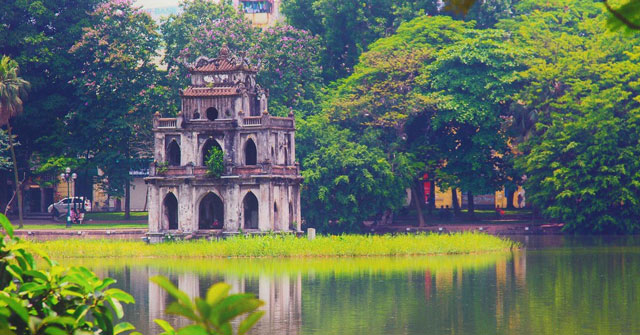

Hoan Kiem Lake
Name: Hoan Kiem Lake.
Location: Hoan Kiem District, Ha Noi, Viet Nam.
Description: Hoan Kiem Lake, also known as Sword Lake is a natural freshwater lake located in the center of Hanoi city. The lake has an area of about 12 hectares. The name Hoan Kiem appeared in the early 15th century associated with the legend of King Le Loi returning the precious sword to the Turtle. According to legend, once King Le Loi was walking on a boat, a golden turtle suddenly emerged to the surface to demand that the king return the sword that Long Vuong had lent to drive away the invading Ming army. The king immediately returned the sword to the magic turtle and the tortoise dived into the water to disappear. Since then, the lake was named Hoan Kiem Lake. The name of the lake is also given to the central district of Hanoi (Hoan Kiem district) and is the only lake in this district to this day.
Activies
Thanks to its location in the heart of Hanoi, Hoan Kiem Lake is surrounded by a wealth of recreational activities of the people and also the beauty of the surrounding architecture and buildings. Here visitors can visit other scenic spots such as Ngoc Son Temple, Te Huc Bridge, Ly Thai To monument, etc. Besides, visitors can participate in activities at Hoan Kiem Lake pedestrian street every 7pm on Saturday and Sunday.
Other Images
 


